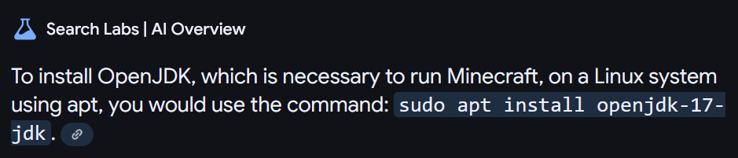
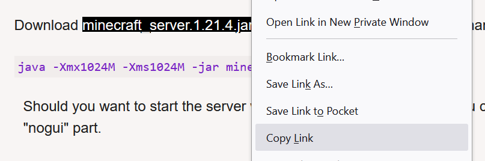
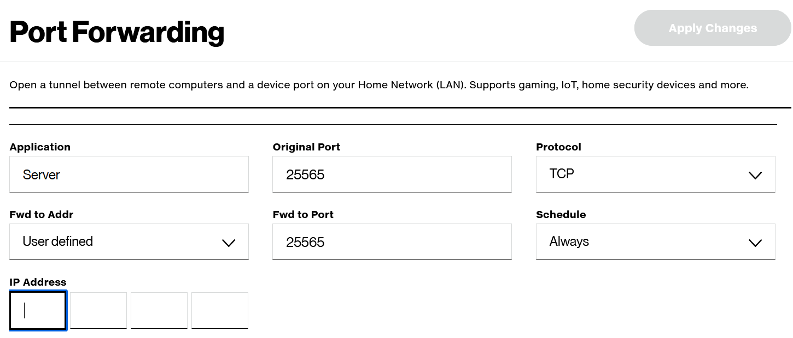

I have quite a bit of computer hardware experience, but I don't
get to practice it much since industries have pushed towards
cloud computing. Self hosting is still a valuable skill and works
great for smaller projects and particular use cases where cloud
isn't required. Also many skills are transferable, such as using
docker or setting up firewall.
Hardware

For around $60, and an old outdated laptop, I can have a custom server
with minimal to no monthly costs.
Benefits of Self Hosting
|
| AWS Free Tier |
Old Computer |
| RAM |
1 GB |
32GB |
| Storage |
5GB |
2048 GB+ |
| Uptime |
750 Hours/Month |
Unlimited |
There's a handful of other reasons too. Customizability,
no sunk costs, no surge pricing, no subscriptions, and
no certification required.
Operating System - Linux
For the OS, I chose the Linux Ubuntu Server
since it's widely used and has lots of documentation. It's also free and
relatively easy to setup. They also provide a free desktop OS, which
helps bring in users and developers
Using a Linux server has a few benefits. Being a server OS,
it's designed to be "headless." Headless means that
there's no desktop, and it's interacted with through a terminal.
Similar to the original computers. This ultimately
saves resources and
improves automation
OS Install Setup: (simplified)
- Download and flash Ubuntu Server's ISO to a removable drive ⚡
- Boot the server from the removable drive 🐛
- Depending on the BIOS/PC, the process of telling a computer to boot from a
specific drive can vary. It may require pressing F8 before another drive boots,
going into BIOS settings, or nothing at all.
- Complete the setup prompts ✅
- Linux will ask for some help: connecting to the internet, knowing which
drive to use, and what packages + settings you want. Depending on the version or OS, this
may be easy or complicated
Post-Install Setup: (optional)
- Activate Firewall 🦺
- In My situation, I'll be port forwarding,
exposing the server to the internet. I went through a firewall setup
to ensure only certain ports are open.
- Setup + Test SSH 🖥️📡🖥️
- Many people prefer to connect to the server
on another computer. This means you won't need a second monitor,
keyboard, etc. Establishing this connection can be done many ways.
I used OpenSHH which came default on Ubuntu Server and
Mobaxterm
to provide a UI for the SSH connection. I tried VSCode for hours and it was all errors.
- Move/Store Server Hardware 📦
- If you don't plan to interact with the computer much,
then consider placing it somewhere safe and secure. Away from liquids, pets,
and in a spot with good wifi (or wired is best). Airflow and clean air matter
to the health of the hardware.
Software
My first project was getting a gaming server setup. I wanted to use Minecraft due to it's relatively open source nature
Setting up Java Developer Kit
Normally, this is a pretty simple setup. Even using ChatGPT, it suggest running
- sudo apt install openjdk-17-jre-headless
This used to work and was the case for years, but in this case, the AI models like GPT and Gemini are outdated:

But according to the and official patch notes and the wiki,
it's been using Java 21 since Apr 2024, so be careful blindly trusting AI. Run this instead:
- sudo apt install openjdk-21-jre-headless
Open Ports in Linux
The server needs to know where to allow and direct traffic. This allows people from outside
the network (others online) to connect to the server. The standard minecraft port is 25565
but any port works. To open this port run:
Retrieve the Installer
The installer will be a .jar file provided here
Copy the link to the .jar file like seen below:

The reason we want the link, and not the file downloaded, is we can automatically download it with a command on the server. Run:
Replace the "https://..." with the actual link and it will download it to the current directory From there you can run:
- java -Xmx4GB -Xms4GB -jar server.jar nogui
and this will get the server setup going.
Network
To allow others to access the server, the router needs to know that it can direct traffic in and out.
It needs to be told what traffic to allow (request to port 25565), and where (to the local IP of the server)
Port Forwarding
To access the router's settings, you need to find the network's "Default Gateway" on the
non-server device. This can be done by running the command "ipconfig" in Command Prompt, or the equivalent in other terminals
The default gateway will look something like "192.168.__.__" and can be copy pasted into the browser to access the UI for the
router:

This is an example of what it may look like after navigating to the Port Forwarding tab. By filling out this form
you can expose the server to the web and allow others to connect. Specifics for port forwarding vary a lot depending on the device.
Networking Notes:
- Protocol Option
-
The form will request you chose a protocol. There are many options, but TCP is the only
one required by Minecraft. Some say TCP+UDP is the right option, but UDP is not used
- Reverse Proxy
-
It is very often suggested to setup a reverse proxy to handle disguising your IP. For most
situations where you only share the IP with a few people, don't leave it on 24/7, and don't have
anything sensitive in reach of the server, this may not be necessary,
- Domain Name
- Along with the reverse proxy, you can use a custom domain name
to further disguise your public IP. This isn't really hiding your IP, but allowing it to be
reached using a more easy to spell and remember name.